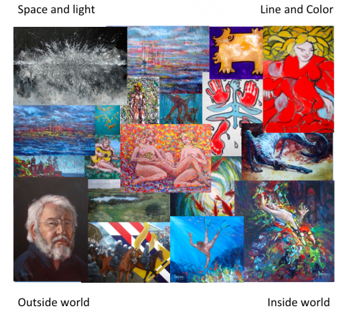

"Having a singular body of work is passé, it's more important to be an interesting artist." Jason Middlebrook
As a painter I have explored many different artistic domains and I follow the roads that my talent selects for me. Over the years it has become clear that my different styles lie in a spectrum of possibilities, varying from pure realism, via pure symbolism and surrealism to almost pure abstraction.
The styles are for me associated with different modes of being. I travel from one style to another as my moods guide me. It is like living in different houses. There is a house of 'business as usual' and there is a house of dreams, there is a house of silence, a place to meditate and there is a house of pure line and color, where I dwell in state of Dionysian euphoria. Sometimes I live in one house for a couple of years, sometimes I shift from day to day, but they are all equally dear to me.

The picture plane above gives an idea of this pictorial space. I got the idea from Scott McCloud. My colleague at the university of Amsterdam, Dick Swaab, thinks the styles have to do with different modes of the brain, but that is more relevant for science than for art. It is what it is. Enjoy...